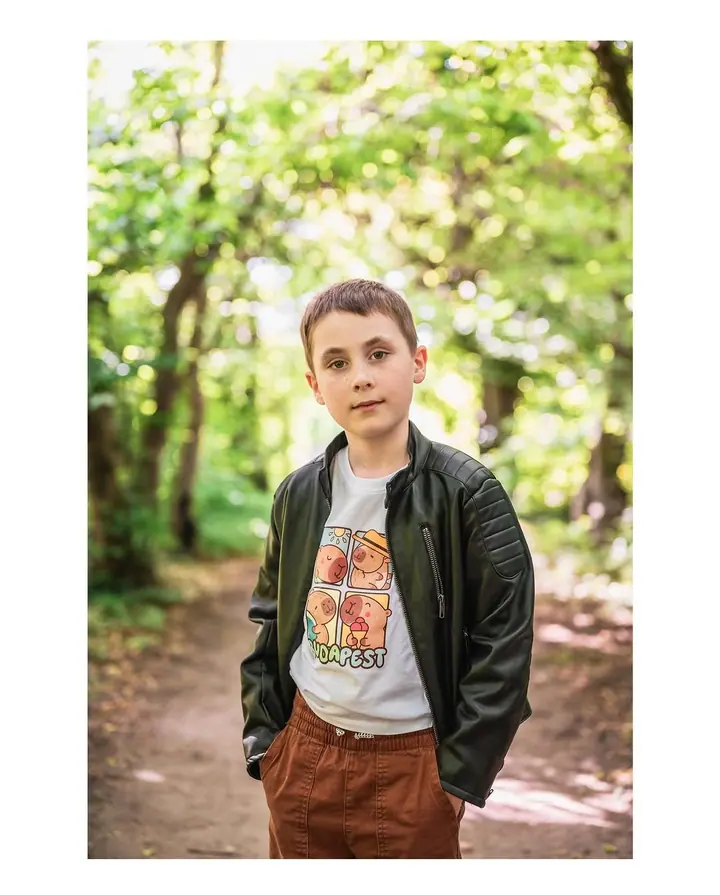
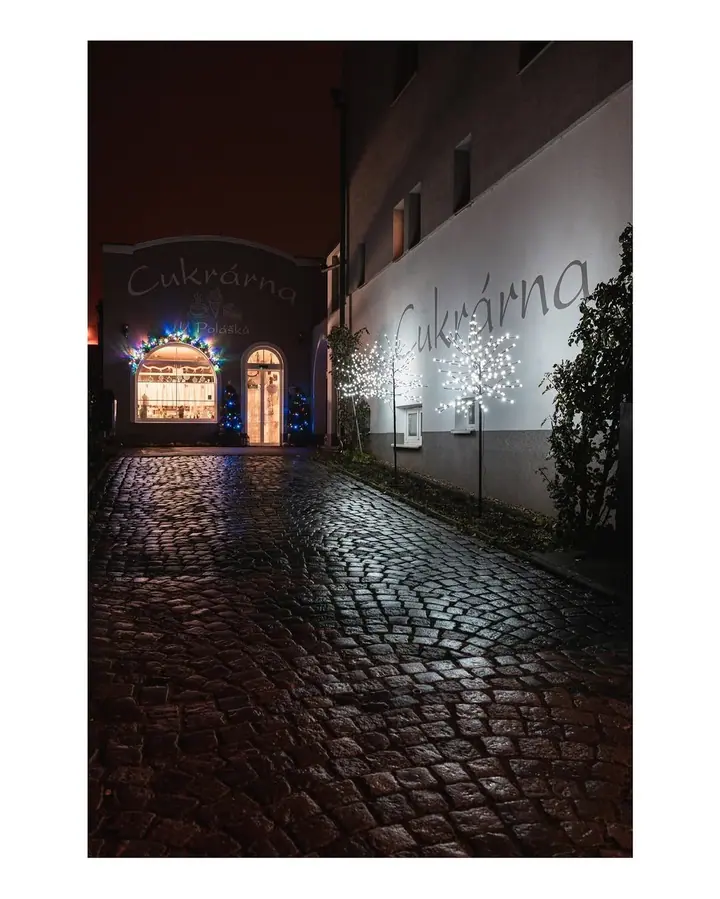
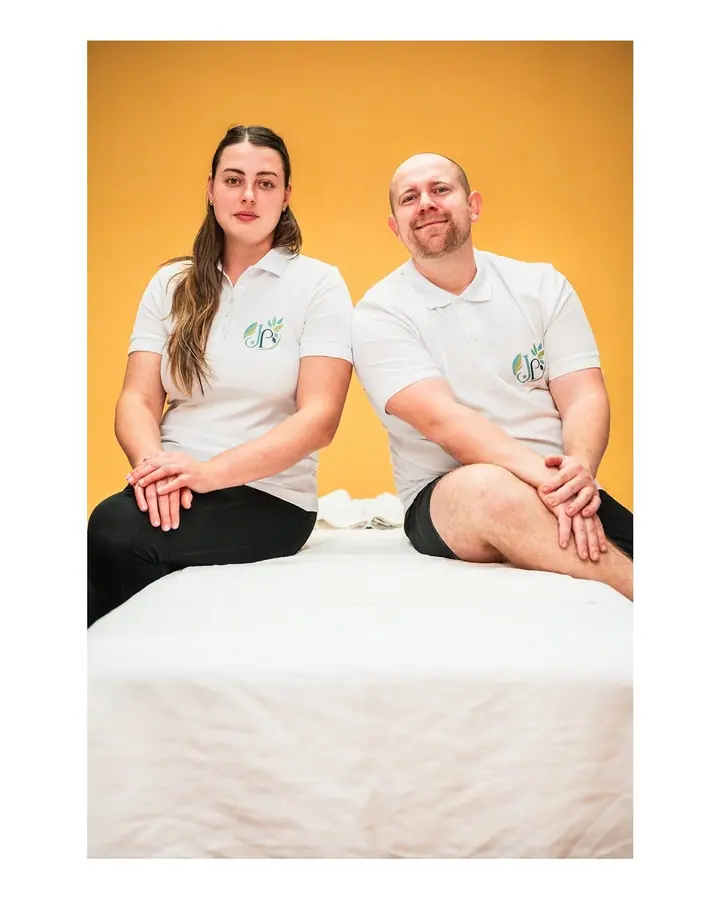
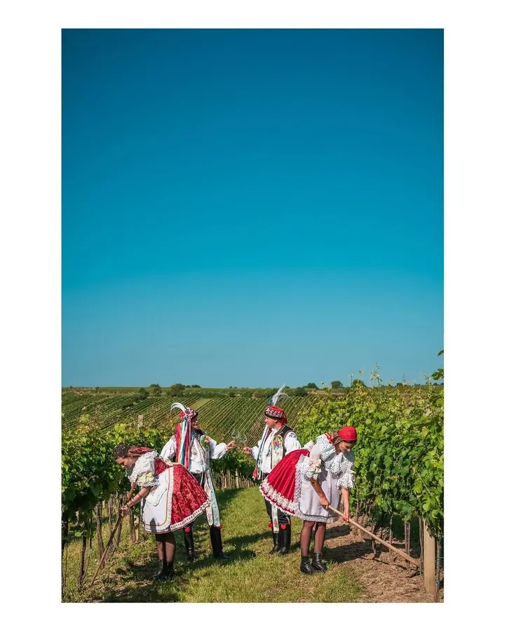
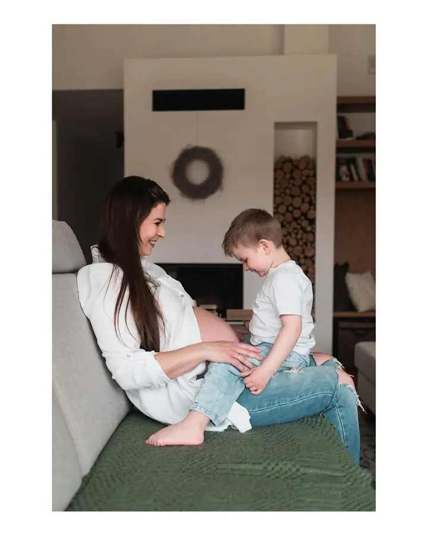
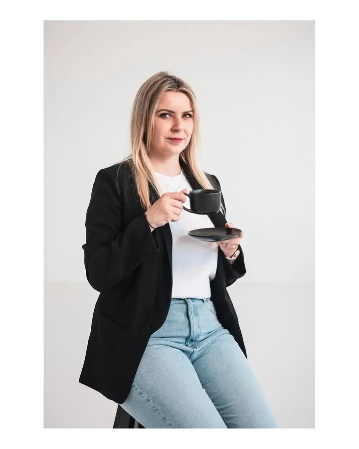
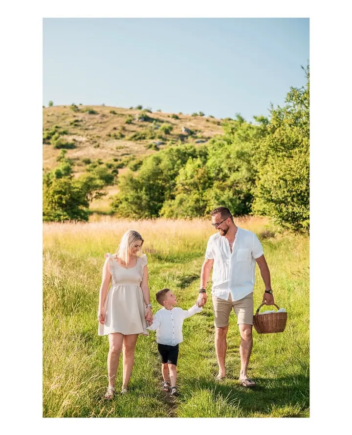

01 / 04
Svatební fotografie
Fotím krátké obřady i celodenní svatby, od příprav přes obřad a gratulace až po první tanec a večerní zábavu. Důraz kladu na přirozené momenty a atmosféru dne bez strojených póz.
Zeptat se na termín→






Fotografie, ke kterým se budete chtít vracet
Zeptat se na termín →(01) Ahoj
Jmenuji se Kamil Brychta a fotím příběhy, na kterých záleží. Svatby , rodiny a těhotenství , akce i portfolia pro podnikatele na Hodonínsku a Břeclavsku . Fotím přirozeně, jednoduše a bez zbytečných póz.
(02) Co fotím
01 / 04
Fotím krátké obřady i celodenní svatby, od příprav přes obřad a gratulace až po první tanec a večerní zábavu. Důraz kladu na přirozené momenty a atmosféru dne bez strojených póz.
Zeptat se na termín→02 / 04
Přirozené fotografie, které zachytí vztahy, emoce a skutečnou atmosféru. Fotit můžeme venku v přírodě nebo po domluvě v ateliéru.
Zeptat se na termín→03 / 04
Křtiny, oslavy, kulturní a společenské akce. Do dění zasahuji co nejméně a zachytím lidi a důležité momenty tak, jak skutečně proběhly.
Zeptat se na termín→Dále nabízím
Pro firmy, vinaře, provozovny i menší podnikatele. Od krátké série záběrů přes fotky týmu a provozu až po kompletní fotobanku pro web, e‑shop a sociální sítě.
↗(04) Postup
Od první zprávy po hotovou galerii.
Krok 1 z 4
Napište nebo zavolejte, o jaké focení máte zájem a kdy byste ho potřebovali.
Krok 2 z 4
Společně probereme termín, rozsah focení, místo a všechno, co je pro vás důležité.
Krok 3 z 4
Fotím přirozeně a bez zbytečných póz. Venku, v ateliéru, na svatbě nebo přímo ve vaší firmě.
Krok 4 z 4
Hotové fotky najdete v soukromé klientské galerii, kam se přihlásíte svým příjmením a heslem.
Přirozeně, jednoduše a bez zbytečných póz
(05) Za objektivem
Působím z Čejkovic a fotím hlavně na Hodonínsku, Břeclavsku a po celé jižní Moravě. Za focením ale rád vyrazím i kamkoliv jinam.
Ať jde o svatbu, rodinné focení nebo křtiny, snažím se do dění zasahovat co nejméně. Zajímají mě vztahy, emoce a skutečná atmosféra, ne strojené pózy. Rodinné a portrétní focení může probíhat venku v přírodě nebo po domluvě v ateliéru.
Fotím i pro firmy, vinaře, provozovny a menší podnikatele. Fotky týmu, provozu nebo produktů pro web, e‑shop a sociální sítě.
Kamil
Kamil Brychta · Svatební, rodinný a reportážní fotograf
Především na Hodonínsku, Břeclavsku a po jižní Moravě. Za focením rád vyrazím i kamkoliv jinam.
Ano. Fotím krátké obřady i celodenní svatby, od příprav až po večerní zábavu.
Rodinné, párové, těhotenské a portrétní focení může probíhat venku v přirozeném prostředí nebo po domluvě v ateliéru.
Fotky předávám přes soukromou klientskou galerii na webu, která je chráněná vaším příjmením a heslem.
(07) Kontakt
Napište pár vět o tom, co si představujete, a termín, který se vám hodí.
kamilovyfotky@gmail.com